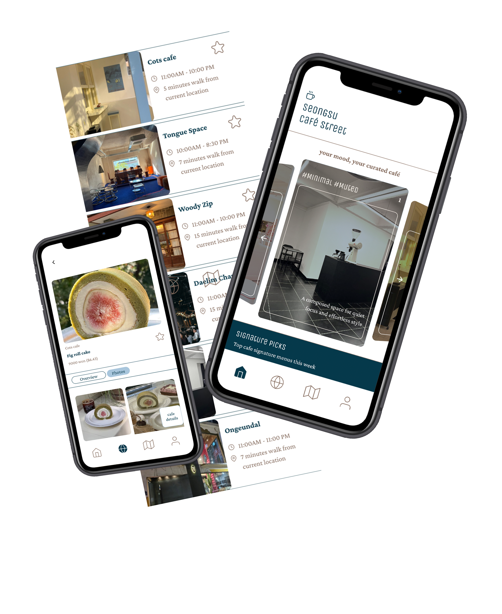
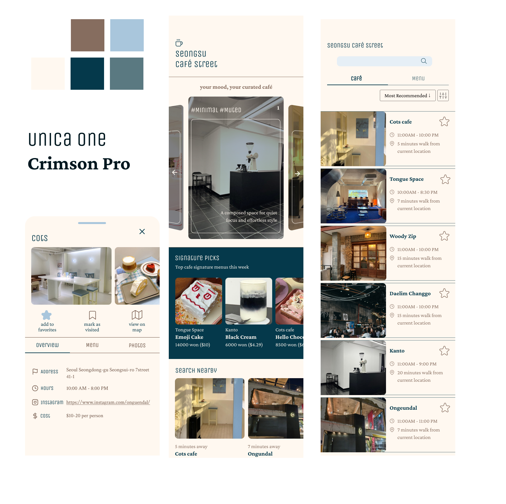

Seongsu Cafe
Search App
Year
Medium
Measurement
Instructor
2025
Indesign, Photoshop, After Effects
23 in x 33 in
Megan Irwin

Context
Seongsu Street in Korea is known for its beautiful, one-of-a-kind cafés. This site-based app makes it easier for people to navigate through the neighborhood, allowing users to discover cafés tailored to their needs—whether by menu, atmosphere, price range, or special features like a rooftop space. For those who aren't sure what they're looking for, you can pick a mood you are looking for, and it will give a perfect recommendation for you!
Strategy
This project grew out of my love for discovering unique cafes and my desire to introduce compelling Korean cafes to travelers. The biggest challenge was designing the filtering system. I had to carefully consider how to categorize and label the diverse characteristics of cafes in a way that felt intuitive to users. It took several days to determine what to call a group that included traits such as “art gallery,” “rooftop,” and “outdoor seating,” which ultimately became “special facilities.” Through this process, I learned the importance of consistently thinking from the user's perspective and being attentive to precise wording.
